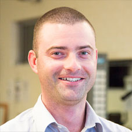

Dr. David Storer - General Practitioner
MBBS/ Dip RACOG
Doctor Storer has over 25 years of experience as a General Practitioner in Western Australia; he has a keen interested in preventative care, chronic health, diabetic care and men’s health. After qualifying from UWA, he moved to England and worked within the NHS hospital system; he then returned to rural Western Australia taking a 3 year solo doctor country practice position, in Pingelly.
Doctor Storer has completed is GP Obstetrics and Gynaecology qualification, as well as the required training to insertion and removal of IMPLANON.
He has completed training in skin lesions and minor surgery. Doctor Storer is qualified to complete diving medicals, these appointments are one hour in length and a best booked ahead of time.
In his free time he enjoys walking the family dog.
Todd Lonie – Physiotherapist BSc Physio, APAM
Graduating from Curtin University, Todd has a keen interest in sporting injury prevention, rehabilitation and performance improvement.
Predominantly working in private practice, Todd has been exposed to a vast range of clientele with medical conditions both acute and chronic in presentation. He has expertise in clinical Pilates and gym based rehabilitation.
Todd also currently works part-time with the West Coast Eagles (AFL) and often travels interstate with the team. He also has worked previously in the WAFL within the colts division at East Perth Football Club.
Todd has worked at Royal Perth Hospital in acute patient care in both the Intensive Care Unit and State Trauma Unit. He has also been involved with pre and post-operative rehabilitation programs for surgical patients with reduced mobility and strength deconditioning.
Emma Boucher – Specialist Physiotherapist BSc Physio, MClin Physio (Continence and Women's Health), APAM
Emma Boucher has a Masters qualification in Continence and Women's Health Physiotherapy from Curtin University (2009). Emma specialises in the management of bladder and bowel dysfunction in both men and women, as well as the treatment of pelvic organ prolapse, pelvic pain, female sexual dysfunction, ante and postnatal disorders.
Women's health physiotherapy is specialized physiotherapy for problems specific to women such as during pregnancy and after birth and problems occurring due to menopause.
Incontinence may start with an occasional leakage of urine with coughing, sneezing or whilst trying to get to the toilet on time.
Emma currently practices at our North Beach Clinic.